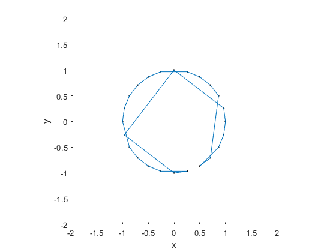
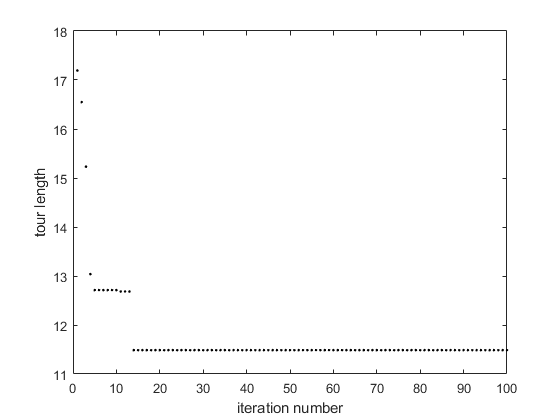

clear all
n = 24;
for k=1:n
x(k) = cos(k*2*pi/n);
y(k) = sin(k*2*pi/n);
end
figure(1);clf;hold on
plot(x,y,'k.')
axis square
xlabel('x')
ylabel('y')
axis([-2 2 -2 2])
B = 50;
solution = zeros(B,n);
solution(:,1) = ones(B,1);
city_count = 1;
max_iter = 100;
best_min(1) = 1e5;
for k=1:max_iter
while 1
possible_moves = zeros(B,n-city_count);
for z=1:B
c = 1;
for s=1:n
if all(solution(z,:)~=s) && all(possible_moves(z,:)~=s)
possible_moves(z,c) = s;
c = c+1;
end
end
end
for z=1:B
for s=1:n-city_count
move_length(z,s) = sqrt((x(solution(z,city_count))-x(possible_moves(z,s)))^2 ...
+(y(solution(z,city_count))-y(possible_moves(z,s)))^2);
end
end
for z=1:B
p(z,:) = 1./move_length(z,:);
P(z,:) = p(z,:)/sum(p(z,:));
end
for z = 1:B
s = 0;
temp = rand;
count2 = 0;
while s<temp
s = s+P(z,count2+1);
count2 = count2+1;
end
solution(z,city_count+1) = possible_moves(z,count2);
end
temp1 = zeros(1,B);
for z=1:B
for s=1:city_count
temp1(z) = temp1(z)+sqrt((x(solution(z,s))-x(solution(z,s+1)))^2 ...
+(y(solution(z,s))-y(solution(z,s+1)))^2);
end
temp1(z) = temp1(z)+sqrt((x(solution(z,city_count+1))-x(solution(z,1)))^2+(y(solution(z,city_count+1))-y(solution(z,1)))^2);
end
for z=1:B
fitness(z) = 1/temp1(z);
end
pm = fitness/sum(fitness);
for z = 1:B
s = 0;
temp = rand;
count2 = 0;
while s<temp
s = s+pm(count2+1);
count2 = count2+1;
end
solution_new(z,:) = solution(count2,:);
end
clear possible_moves move_length p P
city_count = city_count+1;
if city_count<n
solution = solution_new;
else
break
end
end
if all(min(temp1)<best_min)
best_min(k) = min(temp1);
best_tour = solution(find(temp1==min(temp1)),:);
else
best_min(k) = min(best_min);
end
city_count = 1;
solution = zeros(B,n);
solution(:,1) = ones(B,1);
end
figure(1)
for k=1:n-1
line([x(best_tour(1,k)) x(best_tour(1,k+1))],[y(best_tour(1,k)) y(best_tour(1,k+1))])
end
line([x(best_tour(1,end)) x(best_tour(1,1))],[y(best_tour(1,end)) y(best_tour(1,1))])
figure(2)
plot(best_min,'k.')
xlabel('iteration number')
ylabel('tour length')
sprintf('minimum tour length: %f', n*sqrt((1-cos(2*pi/n))^2+(sin(2*pi/n))^2))
ans =
'minimum tour length: 6.265257'
 